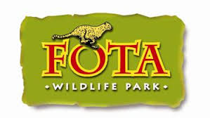
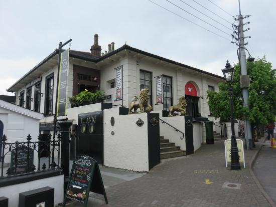
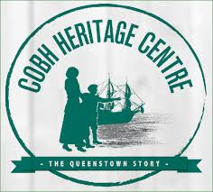
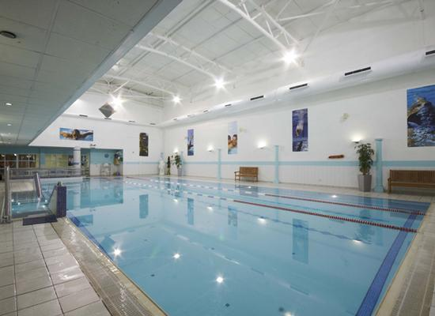

|  |  |
| Fota Wildlife Park Address: Fota, Carrigtwohill, Co. Cork. 021-4883700 | Titanic Experience Cobh Address: 20 Casement Square, Kilgarvan, Cobh, Co. Cork. (021) 481 4412 |
|  |  |
| Cobh Heritage Centre Address: The Queenstown Story Cobh Heritage Centre, Deepwater Quay, Cobh, Co. Cork, P24 CY67, (021) 481 3591 | Coral Leisure Centre Address: Carrignafoy, Cobh, Co. Cork, (021) 420 1696 |